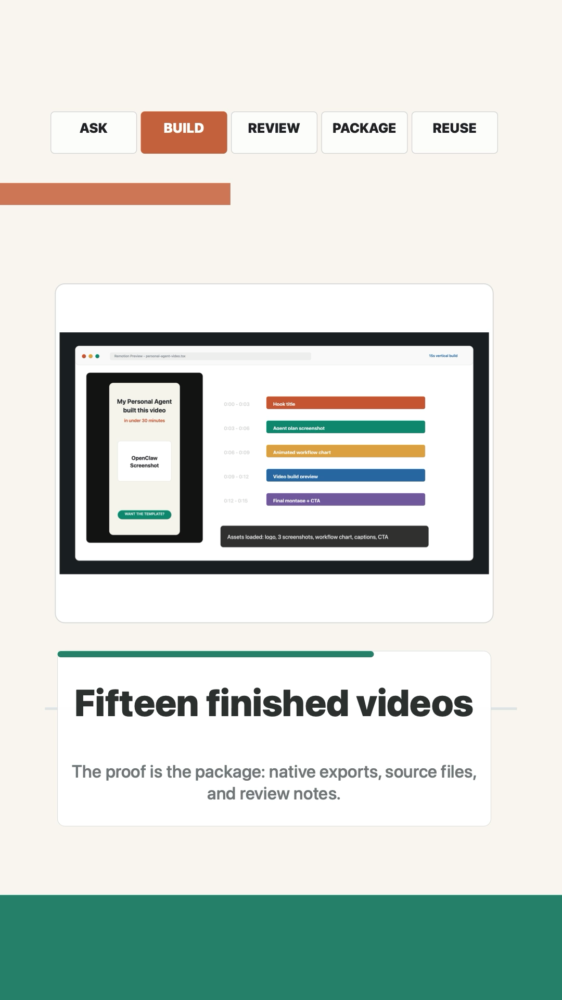
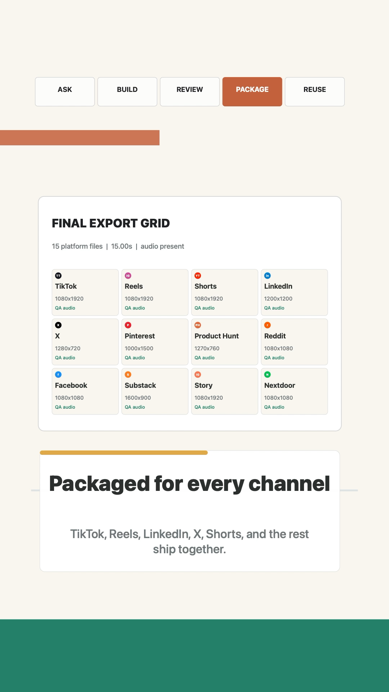
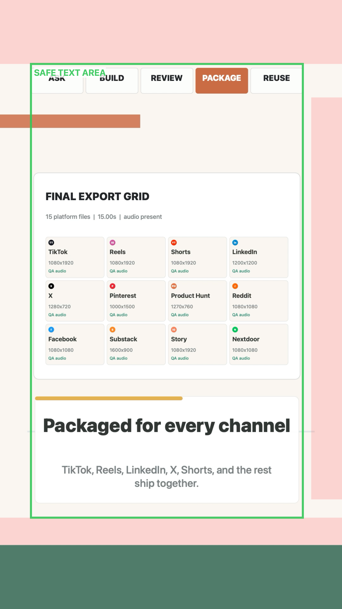
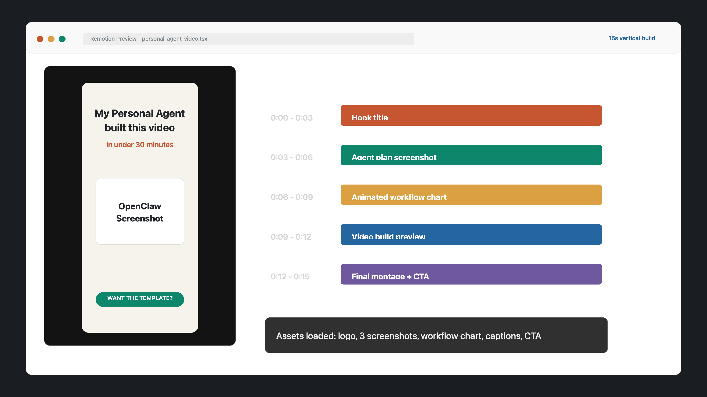

Case Study Positioning
The useful professional story is not just "we made a video." It is: we used AI as a creative production partner, then used human judgment to direct the strategy, improve the story, test the sound, harden the layout, and package the final asset for real publishing.
Final Outcome
The final R1 folder contains clean platform-specific exports, posting instructions, reusable post templates, and narrative materials for explaining the workflow.
- 15 social video exports across TikTok, Instagram, YouTube Shorts, Facebook, LinkedIn, X, Reddit, Pinterest, Product Hunt, Medium/Substack, Nextdoor, Threads, and YouTube Community.
- Platform-specific aspect ratios and filenames.
- Posting templates and instructions for each platform.
- Narrative materials that explain the project to technical, customer, presentation, and child-level audiences.
- QA history covering dimensions, runtime, audio presence, safe zones, and review readiness.
AI Is Not Magic: The Video Stages
The example stages show how the piece evolved from its first voiceover/audio state, to the first premium-voice audition, to the final R1 TikTok release.
- V4: first voiceover/audio state.
- V8: first premium voice version.
- R1 TikTok export: final release.
R1 Proof Artifacts
The restored project media shows the working proof behind the final package: screenshots from the workflow and QA process, plus playable examples of the final social exports. The final R1 audio direction used an ElevenLabs Eryn voice with a Schertz birds sound bed after testing other synthetic voice options.




Iteration Map
V1 - First Critique Set
The first pass used reviewers with different viewer lenses: Webby-style judge, TikTok/Instagram promotion lens, hiring CEO, investor, partner employee, tech-savvy graduate, sixth grader, and retired viewer. That exposed the core issue: the idea had promise, but it needed a clearer story, warmer human proof, and a more polished campaign shape.
V2 - Webby Recut
The video moved from raw concept into a more award-aware social video structure. This established the working pattern for the whole project: make a version, critique it, revise it, and document why the revision exists.
V3 - Human Signature Cut
This version added a warmer human review moment, plainer benefit language, a stronger HOWDY PARTNER closing signature, and a more visible proof trail. It set the 15-second story structure: hook, human review loop, proof/documents, workflow system, build preview, signature, CTA.
V4 - First Audio Foundation
The first HOWDY PARTNER voiceover, original music bed, and short sonic tag were added. This proved the next big improvement was not only visual. Audio quality, voice warmth, and sonic identity became major creative variables.
V5 - Warmer Audio Cut
The more robotic voice direction was replaced with a slower, warmer read. The spoken script tightened, music volume dropped, the pulse cleaned up, and the sonic tag got stronger. It helped, but it exposed the ceiling of local synthetic voice tools.
V6 - Sparse Signature Audio
The cut reduced continuous narration, added intentional silence, used shorter voice cues, and made the sonic signature carry more of the identity. If the synthetic voice was the weak point, the fix was to use less of it and make the audio feel intentional.
V7 - Song-First Audio
This version improved the music bed, added a clearer motif, improved ducking, and made the closing tag more memorable. Emmy and Grammy-style perspectives were added to the review panel. Audio began structuring the story instead of simply decorating it.
V8 - Premium Voice Audition
An ElevenLabs premium voice, Roger, was tested. The music was lowered so reviewers could judge the premium voice clearly. The test proved premium voice was worth using, but also showed that a polished voice was not automatically the right brand voice.
V9 - Voice and Sound-Bed A/B Tests
Roger was compared against Eryn, and Eryn with Schertz birds was compared against Eryn with the V7 music bed. Reviewers selected Eryn and Schertz birds. That made the video feel more personal and less like a generic SaaS ad.
V10 - Award Candidate With Directed Eryn
This version used a fresh directed Eryn take, kept the Schertz birds, and revised visuals to map directly to the spoken beats: ask, build, review, package, reuse. Voice, sound, script, and visuals started working as one clear promise.
V11 - Logo Lockup and Participatory Ending
A stronger logo lockup was added, logo and Texas mark options were tested, and the ending became: "Ask. Build. Review. Reuse. What should we work on next?" That made the final frame feel like a brand landing instead of just an ending.
V12 - Original Logo Direction Restored
The original HOWDY PARTNER logo direction returned, and the cactus/prickly-pear side track was removed. When an experiment distracts from the product story, cut it and return to the clearer brand mark.
V13 - Export Grid Proof
The final export-grid proof beat was added, template chrome was removed, and the multi-platform delivery matrix was shown instead of merely described. This turned the claim into visible proof.
V14 - App Logo Grid
Compact platform identity marks were added inside the export-grid circles. The proof became easier to scan because viewers recognize platform icons faster than text.
V15 - Safe-Zone Candidate and Stakeholder Sign-Off
Active text and grid content moved inside platform safe zones. Bottom footer text was removed. Conservative safe-zone assumptions were used for captions, top UI, and right-side UI. QA covered dimensions, 15-second duration, audio presence, and review readiness.
V16 - Dense Safe-Zone Candidate
The project kept safe-zone discipline while using the available space more aggressively. Screenshot scale, export-grid scale, and top-tab scale increased. This answered the "too much unused space" problem and pushed the layout closer to a stronger mobile-first composition.
V17 - Centered Beige Layout
The black top band was removed, the centered beige layout was introduced, and the vertical composition was recentered. This solved the composition problem created by the denser safe-zone pass.
V18 - Uncropped Screenshots
The centered beige layout stayed, but screenshots returned to contained framing. Source screenshots stopped being cut off inside the cards. This made the proof feel more honest and less overdesigned.
V19 - Larger Tabs and Final Approved Candidate
The final version kept the centered beige layout, kept uncropped screenshots, increased top workflow tab label size, and preserved the winning audio direction: Eryn voice plus Schertz birds. V19 became the approved source candidate for the R1 package.
R1 Package - Final Handoff
The approved V19 cut was packaged into clean platform folders with posting instructions, reusable post templates, platform-specific dimensions, and clean filenames. The final output was not just a video. It was a handoff-ready campaign asset.
What This Proves
- Directing an AI assistant through a long creative iteration process.
- Using critique loops instead of relying on first drafts.
- Comparing options through structured A/B testing.
- Identifying when a problem is visual, audio, strategic, or technical.
- Turning a short video into a multi-platform campaign package.
- Documenting a creative workflow so it becomes reusable.
- Balancing taste, brand, human proof, platform constraints, and QA.